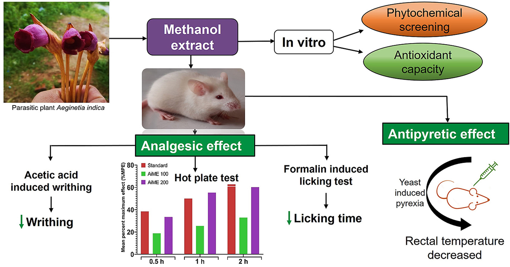

Pharmacological investigation of analgesic and antipyretic activities of methanol extract of the whole part of Aeginetia indica
Md Sharif Reza, Md Jashimuddin, Jamiuddin Ahmed, Muhammad Abeer, Nura Ershad Naznin, Sarah Jafrin, Md Enamul Haque, Md Abdul Barek,
A.F.M. ShahidUd Daula
Abstract
Ethnopharmacological relevance
Aeginetia indica (Linn.), commonly known as aankuri bankuri, guan-jen-huang, forest ghost flower, dok din daeng, dapong tubo; is a root parasitic plant of the Orobanchaceae family native to South and South-East Asian region. Different parts of the plant are traditionally used to treat fever, pain, inflammation, arthritis, cough, diabetes, and chronic liver disease. Local practitioners often recommend this plant as a folk remedy for dermal swelling, painful menstrual periods, wounds, and knee pain. However, the antipyretic and analgesic activity of A. indica have never been investigated.
Aim of the study
The present study was aimed to evaluate the analgesic and antipyretic potential of Aeginetia indica plant extract to verify its effectiveness as reported in traditional uses.
Materials and methods
Preliminary phytochemical analysis of Aeginetia indica crude extract was performed using previously established methods and antioxidant capacity was determined by phosphomolybdenum assay. In vivo analgesic activity of Aeginetia indica methanol extract (AiME) was evaluated by acetic acid-induced writhing test, formalin-induced paw licking test, and hot plate test model. The antipyretic activity was studied in Baker's yeast induced pyrexia model.
Results
Phytochemicals screening revealed cardiac glycosides, saponins, phenols, tannins, and flavonoids in the crude extract of Aeginetia indica. Total phenolic and flavonoid content were recorded as 101 ± 1.1 mg GAE/g of the extract and 35 ± 0.8 mg QE/g of the extract, respectively. The total antioxidant capacity observed in phosphomolybdenum assay was 68.3 ± 1.3 mg ascorbic acid equivalent per gram of the extract. AiME showed significant dose-dependent analgesic activity against acetic acid-induced writhing, formalin-induced paw licking, and hot plate pain model. A higher dose of A. indica (200 mg/kg) produced significant (P less than 0.001) inhibition of writhing by 69% whereas, standard aspirin showed maximum 85.6% inhibition. AiME at all doses showed a significant (P less than 0.001) decrease of paw licking time in both early neurogenic and late inflammatory pain phase of formalin-induced licking test. In the hot plate test, AiME at a 200 mg/kg dose produced antinociceptive activity (55.18%) higher than the standard ketorolac (49.88%) at 1 h. However, after 2 h, ketorolac showed a maximum effect of 62.66% and AiME 200 mg/kg showed a 60.24% effect. A significant (P less than 0.001) reduction of rectal temperature (4.54 °F?) was recorded for AiME 200 mg/kg, which was higher than the standard paracetamol (3.86 F°?) after 24 h of treatment.
Conclusion
The in vivo investigational studies' results demonstrated promising analgesic and antipyretic activities of A. indica, which supported the claim of its folk uses.
Graphical abstract

Introduction
Pain is an anomalous physical and emotional experience related to multiple illnesses and one of the most likely reasons that drive people to pursue medical treatment (Loeser and Melzack, 1999). Pyrexia or fever is a protective response against various pathological states mediated by endogenous cytokines (Dinarello, 1999). During trauma, infection, or tissue injury, pro-inflammatory mediators such as TNF-a and IL-1ß are released at an elevated rate, leading to the enhanced prostaglandin synthesis (Dinarello et al., 1988). Prostaglandins are associated with pain, fever, and inflammation. Currently, nonsteroidal anti-inflammatory drugs (NSAIDs) are often recommended in pain and fever management. However, most NSAIDs exert their effect in combination with some adverse effects like gastric bleeding, kidney disorders, and cardiovascular complications (Walker and Biasucci, 2018). In contrast, medicinal plants are attractive sources of active biological compounds, which can prevent many serious diseases in humans. Alkaloids, polyphenols, phytosterols, terpenes, tannins, and flavonoids are showed to have anti-inflammatory, analgesic, cytotoxic, antioxidant, antibacterial, and anti-cancer activity (Garrido et al., 2001; Sdayria et al., 2018). Plant-derived products have minor side effects and for these reasons getting the researcher's attention as a potential alternative treatment for fever, arthritis, and other neuropathic pain.
Aeginetia indica Linn, is a parasitic plant that grows on the root of rice, bamboo, sugar cane, or pampas grasses and widely distributed in Bangladesh, India, China, Myanmar, and other South-East Asian countries (Chai et al., 1992; Endo et al., 1979). It is popularly known as “Min mukhi” in Bengali culture and recognized as “Buishakphul gulu” in tribes of Chittagong hill tract in Bangladesh. One study suggests A. indica's traditional use as a tonic and an anti-inflammatory medicine in both China and Japan (Chai et al., 1994). In Taiwan and other countries, A. indica has been used as a herbal product to treat cough, arthritis, and chronic liver diseases (Liu et al., 2012). An infusion of the whole plant is used as a folk medicine to control diabetes in the Philippines (Wiart, 2012). A. indica is known as gaura-parbata (used as a symbol of the god Shiva and goddess Parbati in Teej festival) in Nepal, and fresh juice extracted from the whole plant is consumed to reduce fever. The root juice is also advised to use for fever treatment (N. P. Manandhar, 2002; Sapkota, 2013). In Myanmar, a decoction of A. indica is used as an antipyretic drink (Perry LM and Metzger, 1980). A. indica whole plant decoction is taken orally for swelling pain in the throat and urinary tract infection (Hong et al., 2015; Zhou et al., 2011). In New Guinea, it has been used as a traditional remedy to reduce knee pain, and the powder of whole plant part is used on wounds (Parnell, 2001). A. indica decoction is also used as a remedy for dysmenorrhea (pain during menstruation) (Perry LM and Metzger, 1980). Besides, A. indica has an inhibitory effect against the hepatitis C virus life cycle, renal cancer cell growth, and metastasis (Lin et al., 2018; Liu et al., 2012).
Although A. indica has been used in folk medicinal practice for centuries, most of its pharmacological effects are yet to prove. To date, there has been no evidence of its analgesic and antipyretic efficacy assessment. We have studied the antidiabetic and hepatoprotective potential of A. indica in our previous study (Reza et al., 2020). In this present investigation, we evaluated the in-vivo analgesic and antipyretic potential of A. indica methanol extract to testify its traditional practice evidence.
Section snippets
Plant material collection and extract preparation: Aeginetia indica plants were collected in October 2019 (flowering season) from the Chandranath Hill of Chittagong range, Bangladesh. Bangladesh National Herbarium, Dhaka, Bangladesh identified the plant. The voucher specimen was deposited at Bangladesh national herbarium under the accession number of 46478. After collection and cleaning, the whole parts were shade dried at room temperature and finally pulverized using a grinder. A total of 103 g fine powder was then extracted with 80% methanol.
Qualitative phytochemicals screening: We identified cardiac glycosides, phenols, saponins, tannins, and flavonoids in the methanol extract of A. indica after preliminary phytochemical screening.
Total phenolic and flavonoid contents: Total phenolic content present in crude methanol extract of A. indica was measured at an average of 101 ± 1.1 mg GAE/g of the extract. Total flavonoid content present in crude extract of A. indica was estimated at an average of 35 ± 0.8 mg QE/g of the extract.
Discussion: This present study was designed to ascertain the analgesic and antipyretic efficacy of A. indica to verify the claims of its traditional uses. Preliminary phytochemical studies were conducted to estimate the total phenolic and flavonoid content. The results revealed the presence of phenolic and flavonoid compounds in higher concentration. These phenolic and flavonoid are responsible for various pharmacological effects, including analgesic, antipyretic, anti-arthritic, antimicrobial.
Conclusion: The current study demonstrated that the crude extract of A. indica possesses favorable antipyretic and analgesic efficacy, which provides the scientific evidence and reinforces the folk use claims of A. indica in treating fever and pain. Further studies are underway to reveal the possible mechanism of analgesic and antipyretic activities. A. indica showed a higher antioxidant capacity and phytochemical profiling revealed phenolic compounds in a higher concentration.
Funding: No financial support was received from any research institutions.
Author contribution: A.F.M Shahid Ud Daula and Jamiuddin Ahmed designed and supervised the whole project. Md. Sharif Reza and Md Jashimuddin collected the plant and performed all the in vivo and in vitro experiments. Nura Ershad Naznin, Md. Enamul Haque and Md Abdul Barek contributed in data collection, extract preparation, and animal handling throughout the experiments. Md. Sharif Reza, Muhammad Abeer and Sarah Jafrin wrote the manuscript and performed all the statistical calculations.
Declaration of competing interest: The authors declare no conflict of interest that could have influenced the work described in this study.
Acknowledgment: The authors acknowledge the Department of Pharmacy, Noakhali Science and Technology University for providing the laboratory support to carry out the research. We also appreciate all the technical staff of the research lab for their support.